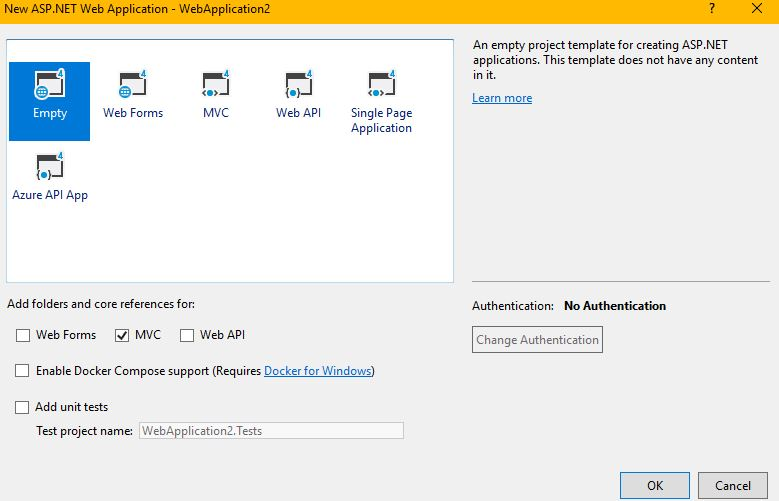
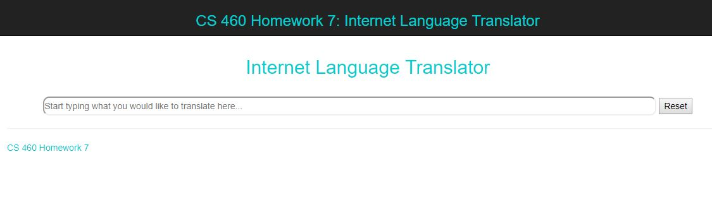
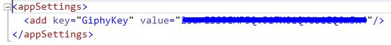

This assignment was assigned to get us back into using Javascript and JQuery and learn some AJAX and how to use JSON. We also learned how to hide API Keys and use the GIPHY API. I thought this assignment was super fun. I was kind of worried it was going to take forever, but it wasn't so bad because I had a lot more time this week to get help from my friends in the class.
This was the easy step. I just selected Empty and checked the MVC box.
This part was fun, I really enjoy formatting stuff (most of the time) so creating pages is always fun for me. Below is what the homepage looks like before people start typing things. The picture on the homework assignment page didn't have any color, but I don't like Black and White things, so I decided to add some blue and make it look nice. (I always waste a lot of time doing formatting/CSS stuff...)
When I was first doing the text box I was having issues making it go across the screen until someone mentioned that the CSS that comes with the projects has a limit on how big those things can be. This part was fun after I got that fixed.
This step was very straight forward. You go to the GIPHY site, say you want to use their stuff for a project and then they give you a "key." This way they can track what you do with their stuff. We were shown in class the way to hide the key because we are supposed to treat it like a password. I will make sure to include screenshots of the stuff that I did, but block out the key so no one else can use it. 1. Create a AppSettings Secrets file.

2. Put file outside of GIT Repository Files.
The CS460 folder is my Git Repository. The highlighted file is the file with my Giphy Key
in it.
3. Add the file to the Web.config file.
We were asked to use Javascript to parse what the user is inputting into our text box. We had to check for a space being pressed instead of an enter key. The code for my solution is here:
$("#words").keypress(function (e) {
var word = "";
if (e.keyCode == 0 || e.keyCode == 32) {
console.log("space");
var value = $("#words").val().toString();
var listWords = value.split(' ');
word = listWords[listWords.length - 1];
console.log(word);
}
This part was not too bad. I found a list of nouns and verbs that were already in Javascript format so I just used those (Named nouns and verbs) and decided those would be considered "interesting." Otherwise, the word is "boring." The code for the implementation of what happens if a word is interesting can be found here:
if (nouns.includes(word.toLowerCase()) || verbs.includes(word.toLowerCase())) {
var source = "/API/Sentence/" + word;
console.log(source);
$.ajax({
type: "GET",
dataType: "json",
url: source,
success: successAjax,
error: errorAjax
});
}
else {
var string = word + " ";
$("#Sentence h2").append(string);
}
The if statement decides if the word is interesting. If it is it continues in the if statement. The sourse is my custom route that can be found in my RoutConfig file (found below). The ajax part is what we were asked to use in order to get the JSON object from GIPHY. The rest of the code for that is in my API controller. If the word is not interesting the else statement gets run and the word just gets appended to the div I'm using to hold the sentence on the page.
routes.MapRoute(
name: "Default",
url: "{controller}/{action}",
defaults: new { controller = "Home", action = "Index"}
);
routes.MapRoute(
name: "API",
url: "{controller}/{action}/{word}",
defaults: new {controller = "API", action = "Sentence"}
);
Once I decided if the word was interesting it was sent to my controller. The next step is getting the Controller to return the JSON object from GIPHY and access the url to get the GIF onto the page.
Since we were required to use C# I figured the Controller would be the best place to put
the code for this. Since I couldn't find any other way someone (Stacia) told me to use
a NuGet called "Newtonsoft JSon." This made accessing the Json object from GIPHY much easier.
The code for accessing this object sending it back can be found below (ignore the AddToDatabase function,
I will talk about it later.)
The first line on the right is how I access the key that I put in the App Secrets
file. This part was fine because I had my file correct in the WebConfig file. The
Debug.WriteLines were for testing. The website is the site we need to go to to get the
Json object from GIPHY. Next we want to read what GIPHY has responded with and put it into
a string that we can parse through to find the GIF for our page. After that we use the
JObject.Parse method to turn this string into our Json object. (This was from the NuGet
we installed.) After that we can just access it like we normally would. The webiste we want
is in the embed_url which is in the data so that's why we have the double thing happening there.
After that we return it back to our Ajax method where it decides if we succefully did that or not.
private RequestsContext db = new RequestsContext();
// GET: API
public JsonResult Sentence(string word)
{
string key = System.Configuration.ConfigurationManager.AppSettings["GiphyKey"];
Debug.WriteLine("word = " + word);
Debug.WriteLine("Key = " + key);
string website = "https://api.giphy.com/v1/stickers/translate?api_key=" + key + "&s=" + word;
WebRequest request = WebRequest.Create(website);
request.ContentType = "application/json; charset=utf-8";
var response = (HttpWebResponse)request.GetResponse();
string words;
using (var stream = new StreamReader(response.GetResponseStream()))
{
words = stream.ReadToEnd();
};
var obj = JObject.Parse(words);
string data = (string)obj["data"]["embed_url"];
//Adds stuff to the database
AddToDatabase(data);
return Json(data, JsonRequestBehavior.AllowGet);
}
This was one of the most complicated steps because I wasn't quite sure how to get the Json object
out of the GIPHY request. I got a lot of help from Stacia and other people in Byte Club.
I did a lot of Debugging on this assignment. (That's why there are so many console.logs and Debug.WriteLines
in the project.)
This part wasn't too bad since I already had the information I needed from the Controller. In the Javascript file I had to create an iframe object from HTML and add the information from the Controller. Then I had to append it to the div where the sentence is to go. The code can be found below: *The quotes around iframe are not actually in the project*:
function successAjax(data) {
console.log("IT WORKED");
console.log("URL found = " + data);
$('<"iframe">', {
src: data,
id: 'sentence',
frameborder: 0,
scrolling: 'no',
align: 'middle'
}).appendTo("#Sentence h2");
}
Creating the database wasn't too bad, adding the data to it was the hard part (for me anyway). Creating the database was the same as we've done in previous homeworks, I even created a context class using the tools from Homework 6 to make the model class for me. Once I got that done I made the "AddToDatabase" function that I said I was going to explain later (it's officially later now). The creating of the database wass explained in Blog 6 and Blog 5 (maybe 4?) so I'm not going to do that again. Instead I will solely focus on how I got the information into the Database in the "AddToDatabase" function.
private void AddToDatabase(string data)
{
Request request = new Request
{
IPAddress = Request.UserHostAddress,
DateOfRequest = DateTime.Now,
Browser = Request.Browser.Type,
SpecialSite = (string)data
};
db.Requests.Add(request);
db.SaveChanges();
Debug.WriteLine("Changes were saved");
}
As you can see I did a lot of debugging while I was creating the project, but testing out
the completed work is the best part. In order to see if it's all working I'm going to include
some screenshots here and a link to a Demo video so you can see it more in action. The screenshots
are mainly to see if the Database is actually working or not.
Demo Video Link: Demo
This was a fun assignment. I wanted to throw my laptop at the wall a couple of times because of stupid mistakes that I couldn't figure out what went wrong, but other than that the assignment wassn't too bad. This was definitely one of the shorter assignments that we have had... (Thank Goodness!)
See you next time,
Tiffany Jansen